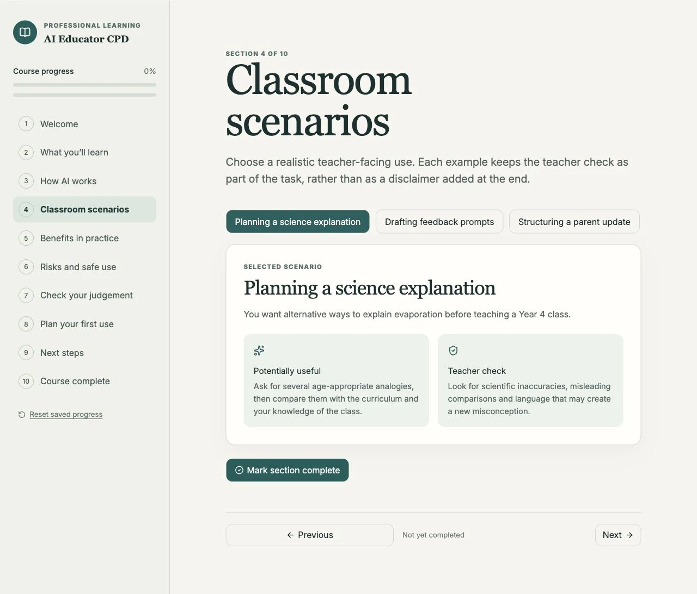
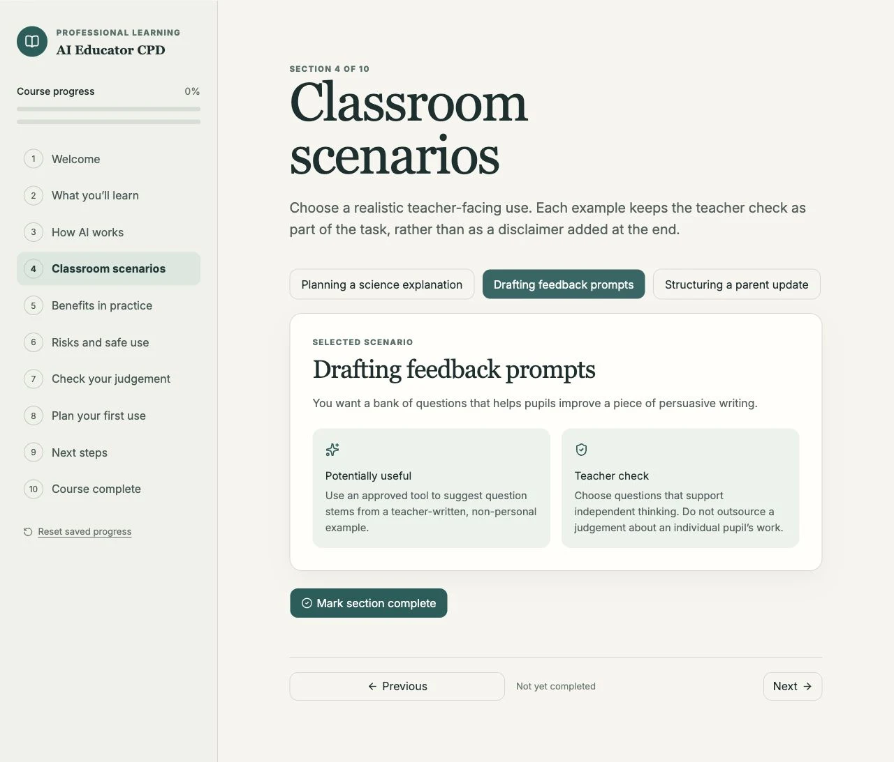
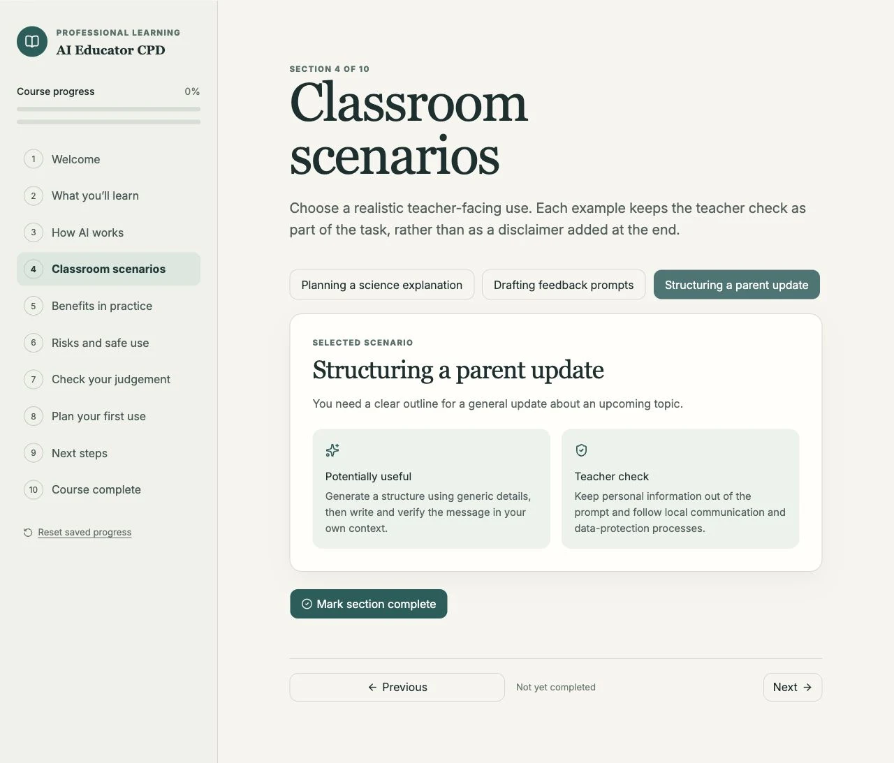
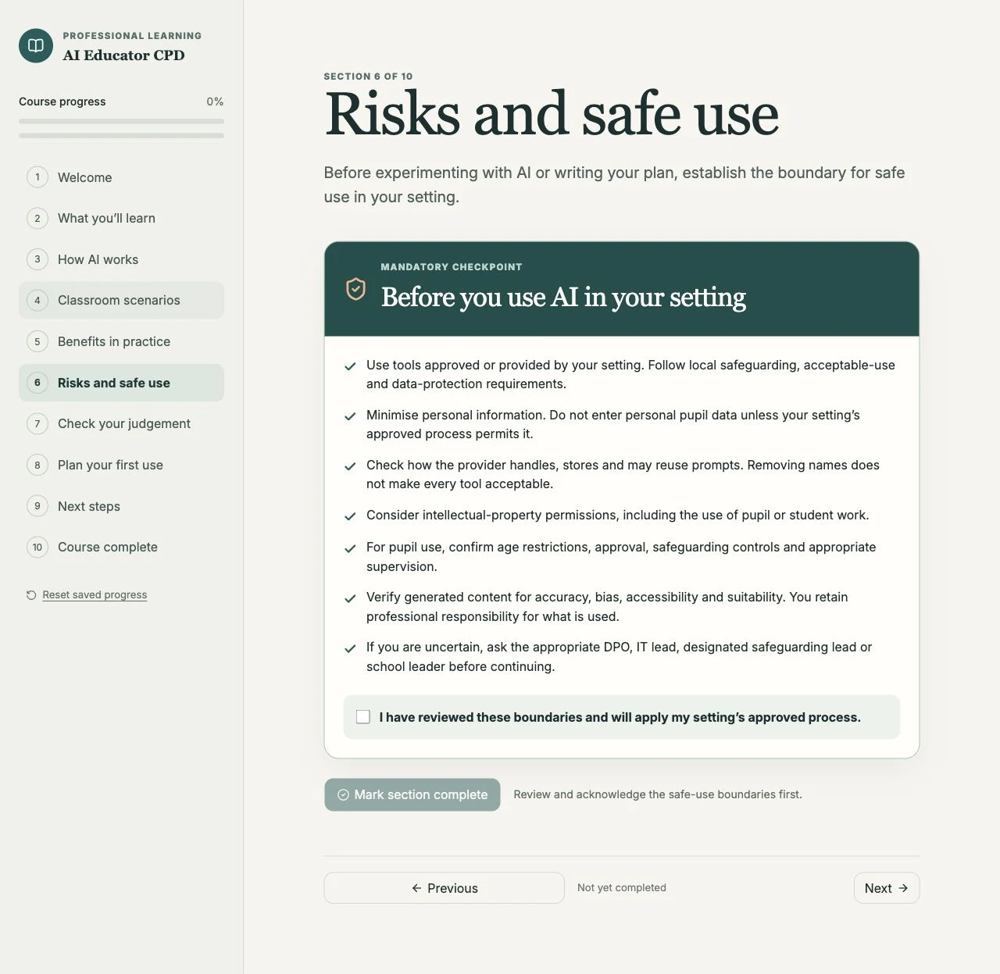
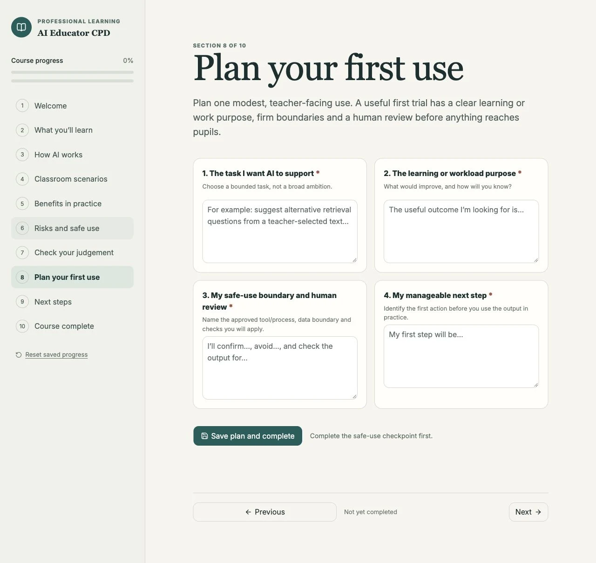

AI Educator CPD: supporting responsible use
I developed an AI policy and staff training programme, secured leadership support and delivered training. The digital module formed part of that work.
Policy adopted. Training delivered. Effective classroom application still needs evaluation.
Explore the current digital module (opens in a new tab)
Discover
Staff were adopting AI without shared training or boundaries.
Staff were using different tools in different ways. Training had not kept pace, and some risks were going unrecognised. I identified a need for shared expectations alongside practical support.
How I assessed staff needs
I monitored AI use and surveyed staff attitudes. The variation in tools, use and confidence informed the training scope. I interpreted this as a need to address professional boundaries as well as basic familiarity.
Comparable surveys at different points over a year also provided a way to review reported changes. The outcome section separates those reports from evidence of effective practice.
Define
I focused on beginners and intermediate users.
Familiarity with AI tools did not necessarily mean understanding appropriate use. The programme needed to introduce the basics while addressing gaps around personal data and inaccurate outputs. Advanced use was outside scope.
- Starting out
- No previous AI use. Needed an understandable introduction.
- Already experimenting
- Some tool familiarity, with gaps around the boundaries of use.
- Outside scope
- Advanced users and specialist AI practice.
Develop
I connected professional boundaries with practical teacher tasks.
The training addressed personal data and hallucinations: plausible but inaccurate AI outputs. In the current module, each scenario pairs a potential use with a teacher check. Reviewing the output becomes part of the task.
Planning a science explanation
- Teaching task
- Alternative ways to explain evaporation before teaching a Year 4 class.
- Potentially useful
- Ask for age-appropriate analogies, then compare them with the curriculum and knowledge of the class.
- Teacher check
- Look for scientific inaccuracies, misleading comparisons and language that could create a new misconception.

Drafting feedback prompts
- Teaching task
- A bank of questions to help pupils improve persuasive writing.
- Potentially useful
- Use an approved tool to suggest question stems from a teacher-written, non-personal example.
- Teacher check
- Choose questions that support independent thinking. Do not outsource a judgement about an individual pupil’s work.


Structuring a parent update
- Teaching task
- A clear outline for a general update about an upcoming topic.
- Potentially useful
- Generate a structure using generic details, then write and verify the message in context.
- Teacher check
- Keep personal information out of the prompt and follow local communication and data-protection processes.


Guidance and safeguards behind the training
Government advice and professional training informed the content on personal data and hallucinations. The current module links to the Department for Education resources below; these links describe its present guidance rather than documenting every source used in the original programme.
- DfE: Generative artificial intelligence in education
- DfE: AI and data protection in schools
- DfE: Using AI in education settings support materials


I secured support and delivered the programme.
I developed the policy and training, presented the approach to senior leadership and rolled out staff training. The policy was adopted. AI Educator formed part of the wider professional development programme.
- Policy adoptedShared expectations for AI use.
- Training deliveredContinuing professional development for staff.
- Digital moduleA self-directed learning experience.
How the digital module supports the programme
The ten-section journey moves from orientation to classroom scenarios, safe-use boundaries, a judgement check and a first-use plan. The current plan asks for a task, its purpose, the safe-use boundary and a manageable next step.
Earlier training was developed in Genially. The screenshots here document the current web module, rather than a record of every training session or evidence that the module alone produced the survey changes.


Implementation and accessibility
I used AI-assisted implementation while retaining responsibility for the learning sequence, professional boundaries, interactions and final review. Navigation, semantic controls, focus behaviour and responsive layouts were manually reviewed. This is not a claim of formal accessibility conformance.
Outcome
Surveys indicated greater use, confidence and policy understanding.
More than 50 staff completed comparable surveys at different points over a year. Responses indicated increased AI use, greater confidence and better understanding of policy boundaries.
How to interpret the survey evidence
The summary reflects comparable staff surveys conducted at different points over a year, involving more than 50 staff. It describes reported change rather than independently observed classroom effectiveness.
Exact survey dates, questions, response counts at each point and whether responses were matched are not presented here. No percentages or magnitude of change are claimed.
The next question is how this translates into practice.
Further evaluation needs to examine how staff check outputs and apply policy boundaries in real tasks. Module usability and the quality of classroom application need separate assessment.